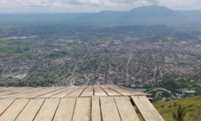
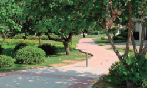

Pico da Pedra Branca
Parque Estadual da Pedra Branca
13.5 km
Difícil
Est. 5h 52min

Serra do Vulcão e Mirante da Rampa
Parque Estadual do Mendanha
11.4 km
Difícil
Est. 5h 5min

Poção via Trilha da Ligação
Proteção Ambiental de Gericinó
Est. 2h 32min
Dificil
Est. 1h 38min

Bosque da Freguesia
Rio de Janeiro, Brasil
1.9 km
Fácil
Est. 25min